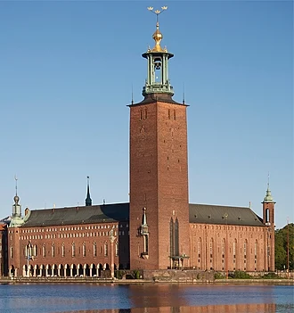

Stockholms stadshus är beläget på den gamla eldkvarnstomten vid Hantverkargatan 1
på Kungsholmen i centrala Stockholm. Byggnadsverket invigdes på midsommaraftonen den 23 juni 1923,
på 400-årsdagen av Gustav Vasas intåg i Stockholm.
Arkitekten Ragnar Östberg lär ha inspirerats av Dogepalatsets volym och arkader mot vattnet samt Markuskyrkans
kampanil i Venedig. Stadshusets yttre och inre bär även influenser av bland annat italiensk arkitektur, nordisk
gotik och islamisk konst. Stadshuset räknas till ett av landets främsta byggnadsverk i den nationalromantiska stilen.
Med sitt 106 meter höga torn är det även ett känt landmärke i Stockholm.
Stockholms stadshus är säte för Stockholms kommunfullmäktigesammanträden och borgarrådens arbete.
Stockholms stadshus är troligen Sveriges mest kända byggnad, inte minst tack vare dess användning som inramning för de årligen återkommande

Stockholms stadshus